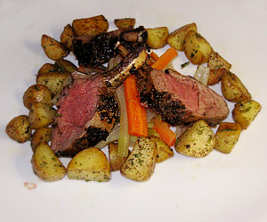

Lammkotelette
5 von 6mit senf, thymian, olivenöl, pfeffer und paprika etwa eine stunde vorher marinieren. gut anbraten und bei ca. 120 grad für eine halbe stunde in den ofen.

mit senf, thymian, olivenöl, pfeffer und paprika etwa eine stunde vorher marinieren. gut anbraten und bei ca. 120 grad für eine halbe stunde in den ofen.

Montagsplausch Nr. 87. Der Abend hiess «lammkotelett am stück mit sauce bearnaise».